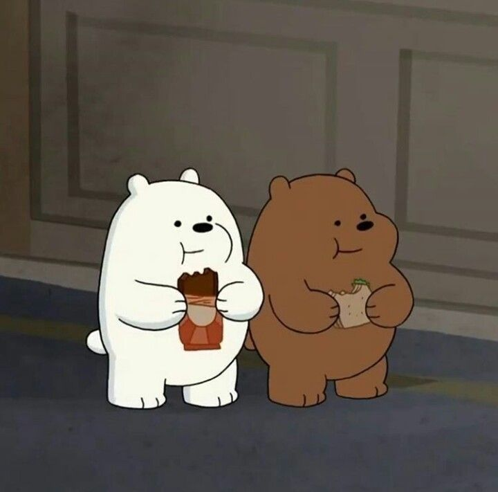
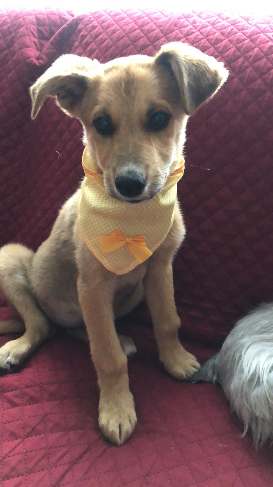
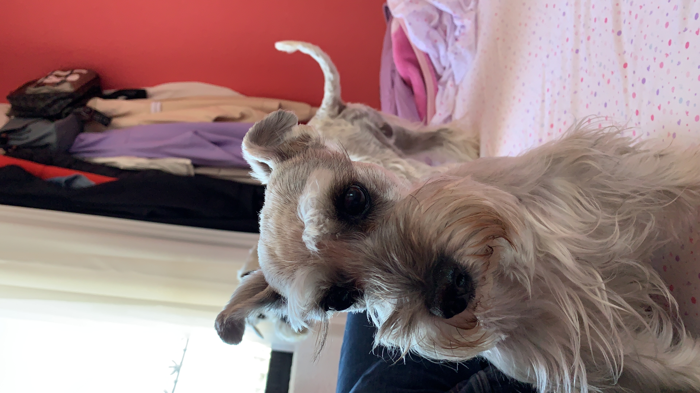
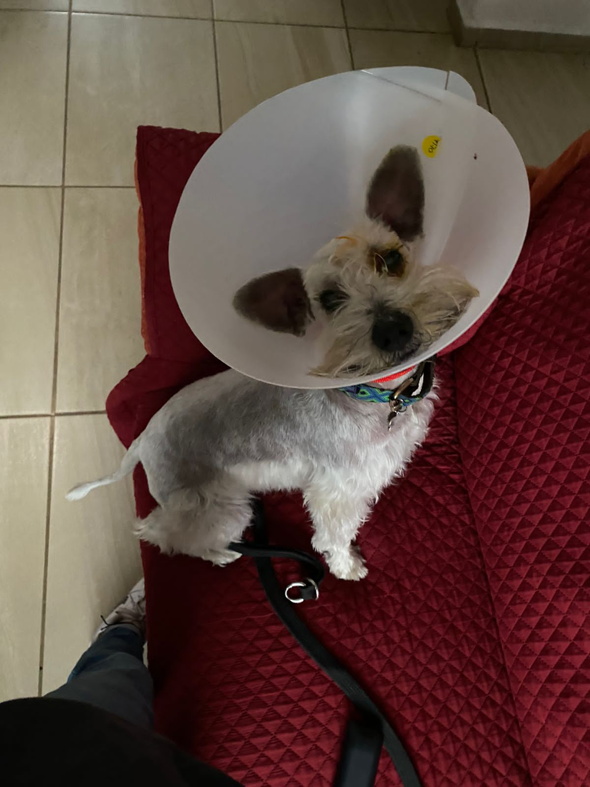

Amor no sé ni qué decirte después de tanto tiempo, siento que ya te lo he dicho todo, no me queda más que agradecerte por todo, por todo lo que eres, por todo lo que me haces sentir, por la persona en la que me ayudas a convertirme cada día.
Te amo como no te imaginas en verdad eres mi vida, me haces la persona más feliz en el mundo, me encanta ser tu novio en verdad.
Se que no todo ha sido de lo mejor pero se que podemos mejorar y crecer los 2 como personas para que esto siga adelante hasta el fin de los tiempos😳 Se que no soy la mejor persona y por eso te pido perdón, en serio intento cambiar cada día y aunque parezca que no me hace muy feliz levantarme con un mensaje tuyo y dormirme igual, solo me hace pensar en lo bonito que tenemos🥰 Nunca debes dudar ni un segundo siquiera lo que siento por ti, que en verdad siempre te deseo lo mejor aunque muchas veces no lo diga, que me preocupo de ti cada segundo de mi vida, que eres la persona más importante en mi mundo.

Obviamente te amo más yo quiero aclarar a pesar de que es 21 que es día especial y según tu ganamos los dos jajaja, pues no es así, siempre todos los días gano yo ardillita🥰🐿 Me encantas en serio, otro nivel, como que me hechizaste o algo así porque en serio estoy perdido por ti, eres la mejor y en serio perdón por todos mis errores, verás que todo eso con el tiempo irá cambiando y seremos felices por siempre😔❤️

Sabes que en cada momento puedes contar conmigo amor, estaré para ti siempre que lo necesites apoyándote, escuchándote y platicando en todo momento❤️ Eres mi mejor amiga, mi novia, mi todo en verdad, te volviste la persona más importante y me encanta eso, se que siempre estarás ahí para mí❤️ Se que las peleas o discusiones nos afectan y mucho, lo se por como te pones y como me pongo yo, y a pesar de que a veces son inevitables al final creo que lo importante es saber arreglar eso, aunque no sea fácil ardillita enojada😳🐿❤️
Amor me encanta pasar tiempo contigo, me puse a ver todas nuestras fotos y videos, recordé todo lo bonito que hemos pasado y no quiero que nunca se acabe, quiero que esa felicidad que siento al ver eso dure para toda una vida Se que no soy el mejor novio, pero cada día quiero ser mejor aunque me cueste trabajo quiero ser la persona que necesitas, en verdad nunca dudes cuanto te amo. Felices 2 años preciosa, en verdad eres el amor de mi vida😔❤️❤️❤️
Te quería hacer una carta en físico pero bueno sabes que mi letra no es la mejor y se me ocurrió esta forma con todo lo de mi curso y espero que te guste❤️ No sé cómo expresarte con palabras todo lo que me haces sentir, por eso hice el video de abajo juntando muchos de nuestros momentos juntos, es lo único que se puede acercar a lo que siento. PD: ábrelo en tu laptop aún no lo puedo convertir para que se pueda ver bien en celular🥰🥰